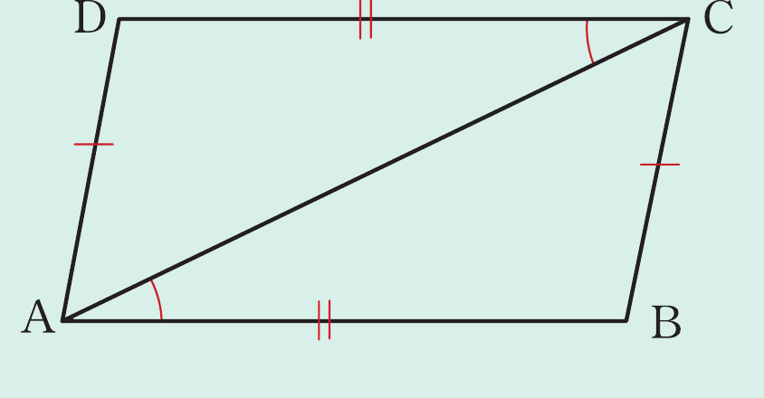
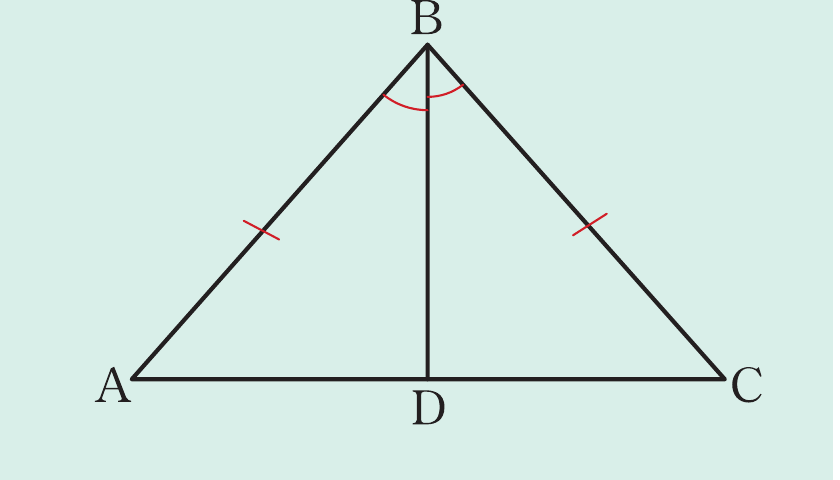

Example 2.6
Use the following figure to prove that ΔADC ≅ ΔCBA.

Solution
Required to prove that,
ΔADC ≅ ΔCBA.
Proof: From △ADC and △CBA, it follows that
DC = AB (given)
DĈA = BÂC (given)
AC is a common side to both triangles.
Therefore,
ΔADC ≅ ΔCBA (by SAS).
Example 2.7
Use the following figure to prove that AD = CD.

Solution
Given ΔABC such that BA = BC and = .
Required to prove that AD = DC.
Proof: In ΔABD and ΔCBD, it implies that
BA = BC (given)
= (given)
BD is a common side.
Thus, ΔABD ≅ ΔCBD (by SAS).
Since the two triangles are congruent, it follows that all sides and angles are equal.
Therefore, AD = CD.